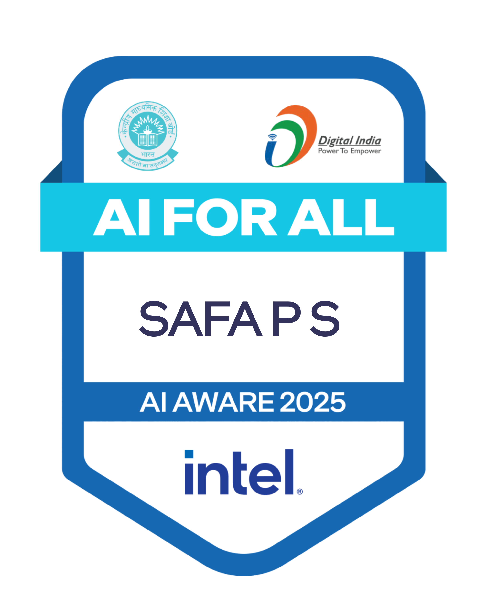

Architecting
Self-Hosted LLMs &
Multimodal AI.
Multilingual Conversational Systems • GPU Inference (Ollama/RunPod) • LoRA/PEFT Optimization
I turn open-weight models (Gemma 4 26B, Qwen2.5, Whisper Large-v3) into cost-effective, sub-second production services. Replaced cloud APIs with self-hosted GPU pipelines, fine-tuned VLMs for Arabic OCR with 4-bit quantization, and built resilient real-time voice architectures.
Safa P.S.
AI & LLM Systems Engineer
Soft Audio Introduction • Realtime Voice
~5s
Median WhatsApp voice/text turnaround
10–50×
RunPod RTX A5000 vs CPU Ollama
95%
Across 5,000+ Institutional FAQs
~51k
Messages/mo vs Proprietary API cost
Multimodal Voice & Text AI Pipeline
Engineered at Bafar Labs for Ziya Gold. Replaced proprietary Gemini APIs with self-hosted Gemma 4 26B and Whisper Large-v3-Turbo on RunPod GPUs. Select a stage below:
Ask Safa's Simulated AI Persona
Recruiters and hiring managers can query technical depth directly. Tap any topic chip below:
Select a technical query prompt:
Work Experience
Proven history of engineering and delivering production LLM systems with measurable business ROI.
AI Engineer
Current RoleBafar Labs • Calicut
Self-Hosted Sales AI: Built a FastAPI service integrating Twilio WhatsApp with self-hosted Gemma 4 26B and Whisper Large-v3-Turbo to replace Gemini in Ziya Gold's sales assistant, handling text, voice notes, and photos.
Low-Latency GPU Inference: Deployed Gemma on a RunPod RTX A5000 GPU via Ollama, achieving ~5s median replies across 27 live tests (10–50× faster than CPU inference).
Multilingual Memory & Tools: Reused production prompt, tool calling, and 16-message rolling memory with multilingual support (English, Arabic, Malayalam) and lead-tag extraction.
Safety & Evaluation: Added HMAC webhook signature verification, link-validation guard, dry-run mode, and per-message metrics logging. Evaluated LLM quality on 31 test cases (Gemma 4 26B: 22/31 vs 11/31 for smaller model).
Commercial Web Platform: Engineered and launched the official production web application for Bafar Foods (bafarfoods.com) using Next.js App Router and Tailwind CSS, featuring automated WhatsApp ordering flows and an exclusive B2B wholesale customer portal.
Cost & Automation Platform: Calculated self-hosted GPU break-even at ~51–60k messages/month. Engineered n8n automation pipelines with Gemini/Gmail API and a full-stack AI video interview platform using Next.js, NestJS, LiveKit, and OpenAI Realtime API.
AI Developer Intern
Banao Technologies • Bangalore
Arabic TTS Pipeline: Built an Arabic Text-to-Speech pipeline using Python, Gemini, and gTTS, extending the application to Arabic-speaking users across MENA regions.
Interview Assessment Engine: Contributed to Interview God, an AI-powered interview assessment platform with speech-to-text and automated evaluation metrics.
Resilience & Fallback: Implemented LLM fallback circuits so application-level AI workflows stayed available when primary cloud AI services faced outages.
AI/ML Engineer Intern
Gwing Software Technologies Pvt Ltd • Hyderabad
Multimodal Conversational Bot: Developed a context-aware chatbot supporting both text and image inputs using LangChain and LlamaIndex.
Vision-Language Fusion: Integrated Qwen2-0.5B-Instruct and BLIP models for combined visual understanding and textual reasoning.
Local Inference: Built local inference APIs using Flask & Streamlit for low-latency, offline testing and internal stakeholder evaluation.
Featured Projects
Production-grade systems covering LoRA fine-tuning, RAG semantic search, vision-language models, and autonomous workflows.
RAG-Based AI Chatbot for Educational Institution
Scalable retrieval-augmented chatbot using LangChain and OpenAI/Gemini APIs. Achieved 95% semantic retrieval accuracy across 5,000+ FAQs and reduced manual institutional support workload by 60% with optimized FAISS vector search.
Self-Healing Sentiment Classifier (DistilBERT + LoRA)
Fine-tuned DistilBERT using parameter-efficient LoRA for low-footprint sentiment classification. Implemented self-healing fallback logic using LangGraph to guarantee output reliability and optimized for CPU-only inference.
Arabic Document OCR via Qwen2.5-VL-7B
Fine-tuned Qwen2.5-VL-7B-Instruct for challenging Arabic handwritten and printed documents using LoRA. Applied 4-bit quantization and gradient checkpointing for resource optimization, building a production-ready pipeline with PyTorch and Transformers.
Autonomous Enterprise Outreach & Follow-up Engine
Engineered end-to-end automation pipelines using n8n, Gemini, Gmail API, and Google Sheets for company research, personalized pitch generation, and Day-3/5 follow-ups with automatic bounce and reply detection. Integrated self-hosted Chatwoot via Docker & Cloudflare Tunnel.
Full-Stack AI Realtime Video Interview Platform
Engineered real-time interview assessment using Next.js, NestJS, Python, LiveKit, and OpenAI Realtime API. Debugged critical production WebSocket connection issues to restore uninterrupted live candidate interview sessions.
Local Multimodal Conversational Engine
Developed an offline-first conversational bot uniting Qwen2-0.5B-Instruct with BLIP image captioning. Implemented Flask and Streamlit interfaces to run low-latency, cross-functional demos locally without cloud egress costs.
Sign Language Recognition using YOLO
Fine-tuned custom YOLO object detection architecture achieving 94% real-time gesture & sign detection accuracy. Evaluated performance using standard mAP (mean Average Precision) metrics and optimized training and inference pipelines for zero-latency webcam video streams.
Bafar Foods — Next.js Enterprise & WhatsApp Commerce
Engineered and deployed the official production web application for Bafar Foods. Architected with Next.js App Router, React, and Tailwind CSS. Features dynamic frozen food catalogs, custom pack size selection, instant WhatsApp checkout flow, and a dedicated B2B portal for wholesale enterprise buyers.
Clinic Management Software (React & TypeScript)
Architected a full-featured clinical management ERP. Integrates end-to-end patient appointment booking, multi-doctor queue tracking, medical pharmacy stock & inventory orders with low-stock alerts, digital Rx consultations, electronic health records (EMR/EHR), and automated patient billing.
Skills & Technologies
Production-tested frameworks, cloud infrastructure, and models.
LLMs & GenAI
Models & Inference Engines
RAG & Agentic Workflows
Context Orchestration
Fine-Tuning & Optimization
PEFT, LoRA & Quantization
Multimodal & Vision
VLMs, OCR & Audio
Programming & APIs
Languages & Frameworks
Deployment & Infra
Cloud GPUs & Integrations
Certifications & Education
Independently verified certifications across Machine Learning, Deep Learning, Cloud APIs, and Computer Science.
✦ Flagship Accredited Programs
Data Science & Machine Learning
Illinois Institute of Technology
Comprehensive accredited curriculum covering supervised/unsupervised machine learning, neural networks, feature engineering, and statistical modeling.
Python for Data Science, AI & Dev
IBM • Coursera
Authorized by IBM, authorized by Senior Data Scientist Dr. Joseph Santarcangelo. Focused on pandas, numpy, REST APIs, and core GenAI engineering.
8-Month Data Science & ML Program
Entri Elevate Program
Rigorous 8-month hands-on engineering track culminating in a live Capstone project, end-to-end model deployments, and real-world evaluation pipelines.
✦ Deep Learning, Machine Learning & National AI Recognition
Deep Learning
Simplilearn
Neural network foundations, activation architectures, backpropagation, and CNNs.
Machine Learning
Simplilearn
Supervised & unsupervised algorithms, gradient descent, clustering, and model validation.
AI For All (Appreciate)
Digital India • Govt. of India
National Artificial Intelligence competency badge in practical AI paradigms and applications.

AI For All (Aware)
Digital India • Govt. of India
National Artificial Intelligence awareness and principles credential under Digital India.
✦ Core Data Engineering, Internship & University Education
AI/ML Engineer Internship
GWING Software Technologies
Official completion of production AI/ML internship engineering context-aware multimodal systems.
Python Libraries for DS
Simplilearn
High-performance vectorized computing with NumPy, Pandas dataframe operations, and data pipelines.
75-Day Coding Challenge
LinkedIn Community
Demonstrated daily technical rigor solving complex algorithmic, data science, and ML challenges.
B.Sc. Information Technology
Mahatma Gandhi University
Comprehensive degree in computer systems, algorithms, databases, object-oriented programming, and software engineering.
Let's build scalable AI systems together.
Whether you need to self-host and fine-tune open-weight LLMs, build real-time voice and multimodal pipelines, or scale RAG workflows, I'm ready to bring production rigor to your team.